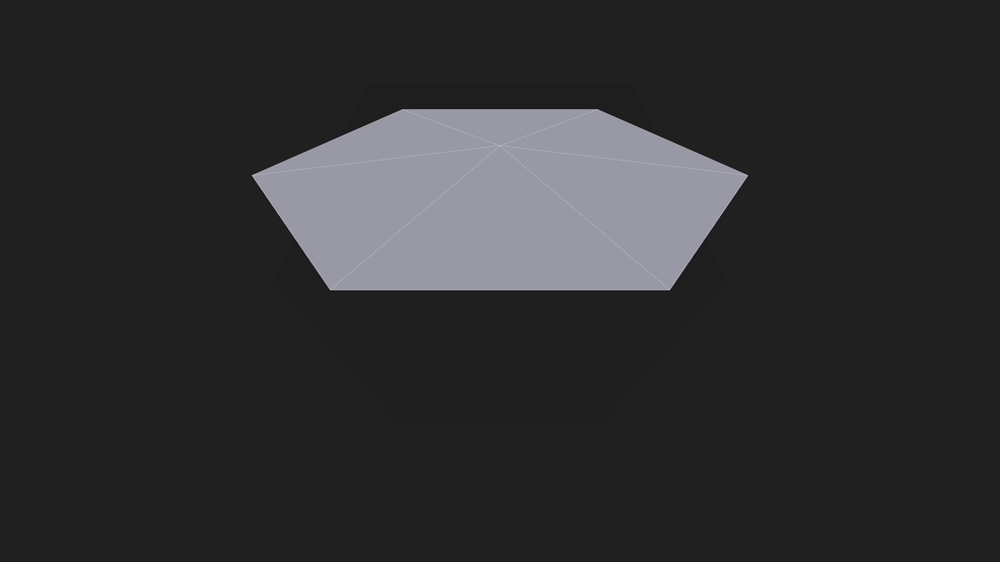
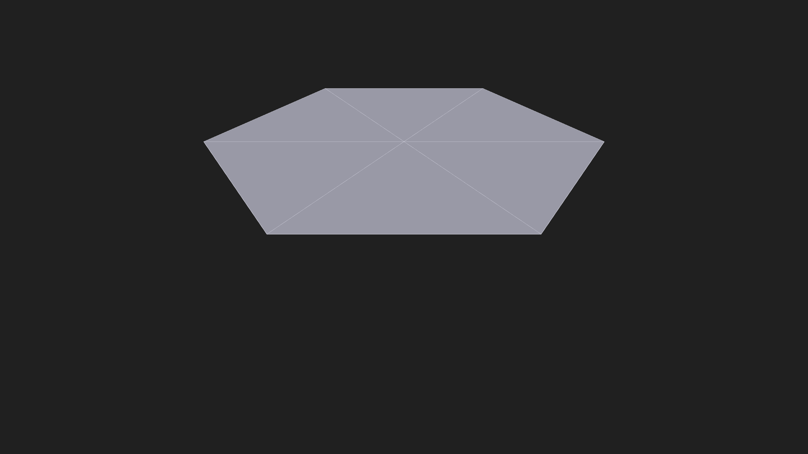

New in these captures: the opt-in edge-contrast feature (CHIMERA_TRI_EDGE_CONTRAST,
constant light edges ~RGB(230,230,242) against the grey fill ~157). Ordinary rendering is
byte-identical when the gate is unset (regression-proven). Both images: identical +0.5 m
presentation lift, identical oblique camera (r=3.0, φ=0.55), fill+wire mode; they differ only
in the accepted physical state. Numerical gates F1–F8: ALL PASS. DYAD now locates the
centre (the spoke junction) and rim — but still cannot distinguish raised from flat
(straight spokes project identically; perspective confounds the junction offset), so the height
comparison is recorded INCONCLUSIVE and the visual experiment is stopped. Two independent proofs
now show this rendering approach cannot resolve the 0.125 m bump: zero shading response, and
projection invariance of straight spokes. Resolving it needs a different evidence class
(side/elevation view, rim-plane reference, or height color ramp). Your acceptance is not
claimed — this pair is presented for that review.

639d4ff3…b02f682;
PNG sha256 a1c24291….
docs/evidence/membrane_window_demo/20260908T203620.679992Z/raised_contrast_oblique.png

b5d4bfa6…0917722;
PNG sha256 8da47c82….
docs/evidence/membrane_window_demo/20260908T203626.782212Z/relaxed_contrast_oblique.png
Verdict classes separate — numerical: PASS · upload: CONDITIONAL with corroboration MATCH ·
window: EXECUTED · DYAD: centre/rim locatable, height INCONCLUSIVE (experiment stopped) ·
human: NOT CLAIMED (this page) · GPU-driven dynamics: NO CLAIM.
Task record: docs/THE_MEMBRANE_CONTRAST01_RECORD.md.